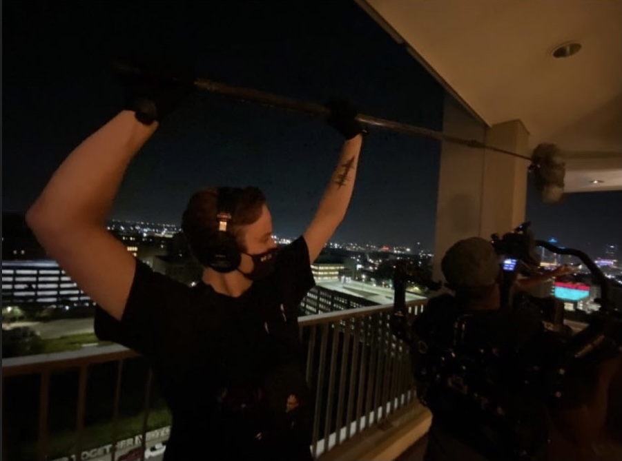

Edward Thomson
I offer location sound services for a variety of productions. I have experience with documentary, interview, corporate, and narrative productions for film, television, and online. I have the equipment for small-medium sized productions and relationships with fellow mixers and rental houses to fit the needs of any production.
Sound can live and die in post-production, and I want to make your project's sound shine. I have experience editing sound for a variety of genres and project types ranging from vocal performances to sketch comedy to narrative films, and I use a variety of industry-standard tools to achieve the best results for your project. Whether you need ADR recording, mixing, or foley work, I can help your project's sound reach its final stage
I believe that sound is the most important part of any project and that I can provide you with the best sound for your project. My philosophy keeps this in mind, while recognizing that any project is made in collaboration with many moving parts. I aim to provide the best sound possible without getting in the way of the rest of production. I believe that my involvement should extend beyond simply my time on location and consistently communicate with other departments and keep detailed logs for post.
